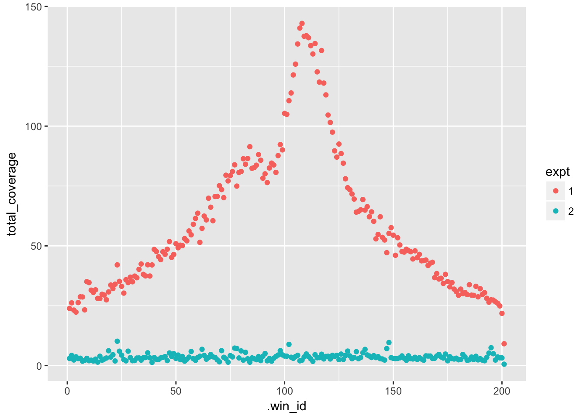
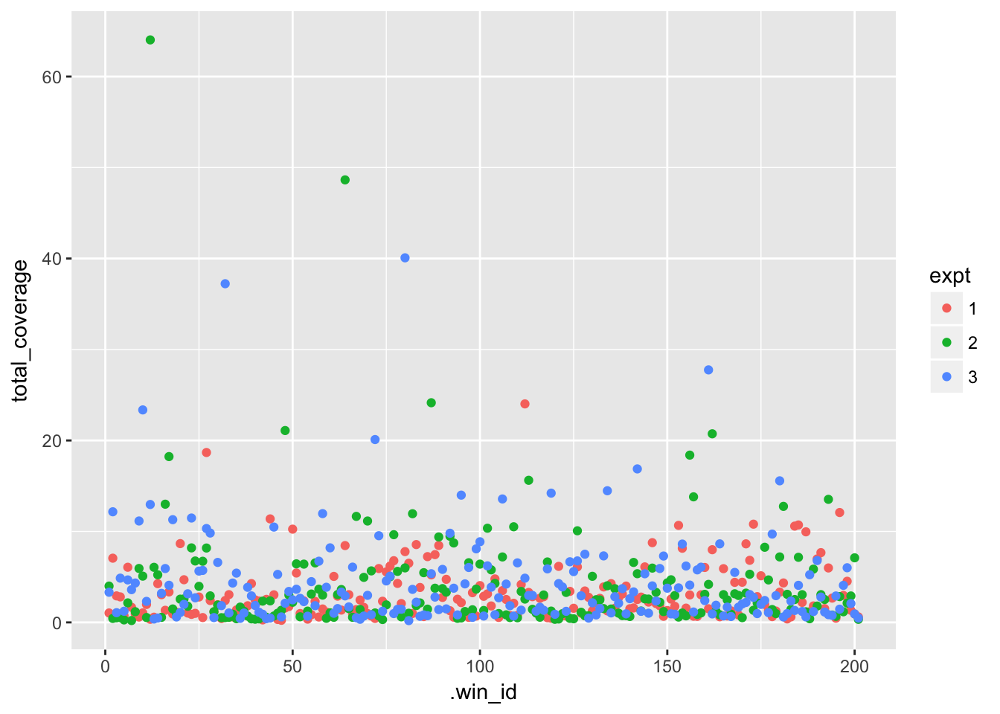

bed_shuffle() and bed_random()
bed_shuffle() and bed_random()
In the weekend assignment you were asked to generate a metagene profile of RNAPolII ChIP-Seq density surrounding the transcription start site (TSS) of human genes. The plot obtained suggested that RNAPolII seems to be enriched near the TSS. One way to strengthen this argument would be to determine what this profile would look like if we randomly placed RNAPolII binding sites around the genome.
valr provides two functions for randomzing intervals. bed_random() which generates intervals of a fixed length throughout the genome and bed_shuffle() which shuffles the location of a set of predefined intervals, but maintains each intervals length.
library(valr)
library(tidyverse)
#> ── Attaching packages ────────────────────────────────── tidyverse 1.2.1 ──
#> ✔ ggplot2 2.2.1 ✔ purrr 0.2.4
#> ✔ tibble 1.3.4 ✔ dplyr 0.7.4.9000
#> ✔ tidyr 0.7.2 ✔ stringr 1.2.0
#> ✔ readr 1.1.1 ✔ forcats 0.2.0
#> ── Conflicts ───────────────────────────────────── tidyverse_conflicts() ──
#> ✖ dplyr::filter() masks stats::filter()
#> ✖ dplyr::lag() masks stats::lag()
library(eda)
genome_file <- system.file("extdata", "hg19_genome.txt.gz", package = "eda")
genome <- read_genome(genome_file)
bed <- read_bed("https://de.cyverse.org/anon-files/iplant/home/kriemo/data/class/polra2_hela_1e6.bg.gz",
n_fields = 4)
bg <- select(bed, everything(), value = name)
bg <- mutate(bg,
value = as.numeric(value))
random_ivls <- bed_random(genome)
shuffled_ivls <- bed_shuffle(bg, genome)Generate 100,000 random intervals of 100 bp each. Set the random number generator seed to 42 Use the genome R object above. Which chromosome has the most intervals?
Assign the random intervals produced in question 1 to a new object called random_ivls. Shuffle these intervals using bed_shuffle(), and supply a seed set to 42. How many intervals are now on chr1? Shuffle the random intervals (random_ivls) again, but set the within argument to TRUE. What effect does this have on the number of intervals per chromosome?
Use bed_shuffle() to generate a set of shuffled intervals for the RNA-PolII ChIP-Seq bedgraphs. Again set the seed argument to 42. Assign the output to an object named shuffled_coverage. Calculate the total number of basepairs covered in the shuffled and the original bed tibbles.
In the previous exercise we generated a shuffled bedgraph (shuffled_ivls). Using this as our bedgraph file (object bg), we can recompute our metagene to examine the distribution of randomly positioned RNA-PolII. But how would we plot the shuffled and the original ChIP-seq data on the same graph?
Shown below is an example metagene profile computed for 1 bedgraph. Each .win_id corresponds to one bin or window region surrounding the TSS. The first .win_id represents the mean coverage from the region -1000 to -990 for all TSS in the genome. The second .win_id represents regions -990 to -980 and so on.
How would we modify our tibble to be able to plot multiple ChIP-Seq experiments?
#> # A tibble: 201 x 2
#> .win_id total_coverage
#> <int> <dbl>
#> 1 1 23.88922
#> 2 2 26.19525
#> 3 3 23.18755
#> 4 4 22.34402
#> 5 5 26.30945
#> 6 6 28.71125
#> 7 7 28.66961
#> 8 8 23.27538
#> 9 9 35.06543
#> 10 10 34.67965
#> # ... with 191 more rowsIf we add another column that indicates the experiment, we can facet, or apply an aesthetic based on the experiment.
#> # A tibble: 402 x 3
#> .win_id total_coverage experiment
#> <int> <dbl> <dbl>
#> 1 1 23.88922 1
#> 2 1 23.88922 2
#> 3 2 26.19525 1
#> 4 2 26.19525 2
#> 5 3 23.18755 1
#> 6 3 23.18755 2
#> 7 4 22.34402 1
#> 8 4 22.34402 2
#> 9 5 26.30945 1
#> 10 5 26.30945 2
#> # ... with 392 more rowsThe dplyr function bind_rows() combines multiple tibbles together in a row-wise fashion. bind_cols binds tibbles together column-wise.
tibble_1 <- data_frame(id = seq(1, 100),
measurement_1 = rnorm(100))
tibble_1
#> # A tibble: 100 x 2
#> id measurement_1
#> <int> <dbl>
#> 1 1 0.66679462
#> 2 2 0.24049896
#> 3 3 1.55512874
#> 4 4 -0.75274870
#> 5 5 0.80749442
#> 6 6 0.25470467
#> 7 7 0.02687301
#> 8 8 1.53449670
#> 9 9 1.28550345
#> 10 10 -0.61429068
#> # ... with 90 more rows
tibble_2 <- data_frame(id = seq(1, 100),
measurement_1 = rnorm(100))
tibble_2
#> # A tibble: 100 x 2
#> id measurement_1
#> <int> <dbl>
#> 1 1 1.4841634
#> 2 2 0.5934025
#> 3 3 0.1297867
#> 4 4 -0.4987656
#> 5 5 0.2150065
#> 6 6 0.4736234
#> 7 7 -1.6283166
#> 8 8 -1.4868916
#> 9 9 -0.8753699
#> 10 10 1.4377516
#> # ... with 90 more rows
bind_rows(tibble_1, tibble_2)
#> # A tibble: 200 x 2
#> id measurement_1
#> <int> <dbl>
#> 1 1 0.66679462
#> 2 2 0.24049896
#> 3 3 1.55512874
#> 4 4 -0.75274870
#> 5 5 0.80749442
#> 6 6 0.25470467
#> 7 7 0.02687301
#> 8 8 1.53449670
#> 9 9 1.28550345
#> 10 10 -0.61429068
#> # ... with 190 more rows
bind_rows(tibble_1, tibble_2, .id = "tibble_id")
#> # A tibble: 200 x 3
#> tibble_id id measurement_1
#> <chr> <int> <dbl>
#> 1 1 1 0.66679462
#> 2 1 2 0.24049896
#> 3 1 3 1.55512874
#> 4 1 4 -0.75274870
#> 5 1 5 0.80749442
#> 6 1 6 0.25470467
#> 7 1 7 0.02687301
#> 8 1 8 1.53449670
#> 9 1 9 1.28550345
#> 10 1 10 -0.61429068
#> # ... with 190 more rowsFirst let’s read all of our bed files into R
genes_file <- system.file("extdata", "hg19_genes.bed.gz", package = "eda")
genes <- read_bed(genes_file, n_fields = 6)
genome_file <- system.file("extdata", "hg19_genome.txt.gz", package = "eda")
genome <- read_genome(genome_file)
bed <- read_bed("https://de.cyverse.org/anon-files/iplant/home/kriemo/data/class/polra2_hela_1e6.bg.gz",
n_fields = 4)
bg <- select(bed, everything(), value = name)
bg <- mutate(bg,
value = as.numeric(value))Then let’s generate our set of windows surrounding each TSS (“+” strand only)
tss_windows <- genes %>%
filter(strand == "+") %>%
mutate(end = start + 1) %>%
bed_slop(genome, both = 1000) %>%
bed_makewindows(genome, win_size = 10)Next, let’s compute coverage for the rnapolII bedgraph.
rnapolII <- bed_map(tss_windows,
bg,
total_reads = sum(value)) %>%
group_by(.win_id) %>%
summarize(total_coverage = mean(total_reads, na.rm = TRUE)) Lastly, let’s compute coverage for a shuffled bedgraph.
shuffled_coverage <- bed_shuffle(bg, genome, seed = 42)
shuffled <- bed_map(tss_windows,
shuffled_coverage,
total_reads = sum(value)) %>%
group_by(.win_id) %>%
summarize(total_coverage = mean(total_reads, na.rm = TRUE))
rnapolII
#> # A tibble: 201 x 2
#> .win_id total_coverage
#> <int> <dbl>
#> 1 1 23.88922
#> 2 2 26.19525
#> 3 3 23.18755
#> 4 4 22.34402
#> 5 5 26.30945
#> 6 6 28.71125
#> 7 7 28.66961
#> 8 8 23.27538
#> 9 9 35.06543
#> 10 10 34.67965
#> # ... with 191 more rows
shuffled
#> # A tibble: 201 x 2
#> .win_id total_coverage
#> <int> <dbl>
#> 1 1 2.998299
#> 2 2 4.265660
#> 3 3 2.352762
#> 4 4 3.682922
#> 5 5 2.937430
#> 6 6 3.082288
#> 7 7 1.839423
#> 8 8 2.165887
#> 9 9 3.044269
#> 10 10 2.049153
#> # ... with 191 more rowsNow we can bind these results together and we are ready to plot:
res <- bind_rows(rnapolII,
shuffled,
.id = "expt")
res
#> # A tibble: 402 x 3
#> expt .win_id total_coverage
#> <chr> <int> <dbl>
#> 1 1 1 23.88922
#> 2 1 2 26.19525
#> 3 1 3 23.18755
#> 4 1 4 22.34402
#> 5 1 5 26.30945
#> 6 1 6 28.71125
#> 7 1 7 28.66961
#> 8 1 8 23.27538
#> 9 1 9 35.06543
#> 10 1 10 34.67965
#> # ... with 392 more rowsAdd finally plot the results
ggplot(res, aes(.win_id, total_coverage)) +
geom_point(aes(colour = expt))
At this point we have generated profiles for the RNAPolII chip and a shuffled control. As you may have noticed, a lot of the code that we wrote was duplicated.
Here’s all of the code used to compute the metagene profile. Imagine that we wanted to now generate additional metagene profiles. We could copy and paste the code below and change it to make a new plot. What parts of the code would we need to change in order to make a metagene for a new bedGraph file?
output <- genes %>%
filter(strand == "+") %>%
mutate(end = start + 1) %>%
bed_slop(genome, both = 1000) %>%
bed_makewindows(genome, win_size = 10) %>%
bed_map(.,
bg,
total_reads = sum(value)) %>%
group_by(.win_id) %>%
summarize(total_coverage = mean(total_reads, na.rm = TRUE)) As you can see all that we need to change is the input bg object.
A common rule in programming is DRY or Don’t Repeat Yourself. If you need to do something more than twice, then write a function. This reduces the amount of code you have to type, and therefore reduces typos. Additionally, if you need to change something, now you dont have to change it everywhere you copied and pasted the code, but rather just in the function.
hello_world <- function(){
print("hello world")
}
hello_world()
#> [1] "hello world"add_one_to_one <- function(){
1 + 1
}
add_one_to_one()
#> [1] 2
add_one <- function(number_to_add){
1 + number_to_add
}
add_one(42)
#> [1] 43
int_to_add <- 42
add_one(int_to_add)
#> [1] 43add_any <- function(first = 1, second = 2){
res <- first + second
res
}
add_any()
#> [1] 3
add_any(4)
#> [1] 6
add_any(2, 2)
#> [1] 4When writing a function we need to identify all of the objects that need to be passed to the function. A function should not depend on objects in in the environment (i.e. current session) to run.
For example in the following code, genes, genome, and bg all need to be in the environment for this code to run. Therefore we should make these arguments that are passed to the function.
output <- genes %>%
filter(strand == "+") %>%
mutate(end = start + 1) %>%
bed_slop(genome, both = 1000) %>%
bed_makewindows(genome, win_size = 10) %>%
bed_map(.,
bg,
total_reads = sum(value)) %>%
group_by(.win_id) %>%
summarize(total_coverage = mean(total_reads, na.rm = TRUE)) Here, we’ve designated the genes, genome and bg objects as function arguments and renamed them to make it clearer what the identity of each argument is.
compute_metagene <- function(chip_seq_bedgraph,
genes_bed,
genome_bed){
output <- genes_bed %>%
filter(strand == "+") %>%
mutate(end = start + 1) %>%
bed_slop(genome_bed, both = 1000) %>%
bed_makewindows(genome_bed, win_size = 10) %>%
bed_map(.,
chip_seq_bedgraph,
total_reads = sum(value)) %>%
group_by(.win_id) %>%
summarize(total_coverage = mean(total_reads, na.rm = TRUE))
output
}
compute_metagene(bg, genes, genome)
#> # A tibble: 201 x 2
#> .win_id total_coverage
#> <int> <dbl>
#> 1 1 23.88922
#> 2 2 26.19525
#> 3 3 23.18755
#> 4 4 22.34402
#> 5 5 26.30945
#> 6 6 28.71125
#> 7 7 28.66961
#> 8 8 23.27538
#> 9 9 35.06543
#> 10 10 34.67965
#> # ... with 191 more rowsNow we can apply the function to any arbitrary bedgraph:
compute_metagene(shuffled_coverage, genes, genome)
compute_metagene(..., genes, genome)Imagine we perform our ChIP-Seq experiment with many replicates. We can use the read_bed() to read all of these files into R, but now we have a whole bunch of R objects in our environment.
bg_chipseq_rep1 <- read_bed("rep1.bg.gz")
bg_chipseq_rep2 <- read_bed("rep2.bg.gz")
bg_chipseq_rep3 <- read_bed("rep3.bg.gz")
bg_chipseq_rep4 <- read_bed("rep4.bg.gz")
bg_chipseq_rep5 <- read_bed("rep5.bg.gz")
bg_chipseq_rep6 <- read_bed("rep6.bg.gz")You can imagine that we could end up generating many intermediate files, and again repeating ourselves, even though we are using a function.
metagene_chipseq_rep1 <- compute_metagene(bg_chipseq_rep1, genome, genes)
metagene_chipseq_rep2 <- compute_metagene(bg_chipseq_rep2, genome, genes)
metagene_chipseq_rep3 <- compute_metagene(bg_chipseq_rep3, genome, genes)
metagene_chipseq_rep4 <- compute_metagene(bg_chipseq_rep4, genome, genes)
metagene_chipseq_rep5 <- compute_metagene(bg_chipseq_rep5, genome, genes)
metagene_chipseq_rep6 <- compute_metagene(bg_chipseq_rep6, genome, genes)chipseq_bgs <- list(bg_chipseq_rep1,
bg_chipseq_rep2,
bg_chipseq_rep3,
bg_chipseq_rep4,
bg_chipseq_rep5,
bg_chipseq_rep6)
chipseq_bgsYou can access an individual element by index
chipseq_bgs[[1]] # first object
chipseq_bgs[[2]] # second objectOr you can name each element, and access by name using the $ symbol
chipseq_bgs <- list(rep1 = bg_chipseq_rep1,
rep2 = bg_chipseq_rep2,
rep3 = bg_chipseq_rep3,
rep4 = bg_chipseq_rep4,
rep5 = bg_chipseq_rep5,
rep6 = bg_chipseq_rep6)
# access first tibble
chipseq_bgs$rep1
# print chrom column from first tibble
chipseq_bgs$rep1$chrom
select(chipseq_bgs$rep1, chrom)Now we can refer to a single list object:
metagenes_chipseq = list()
metagenes_chipseq$rep1 <- compute_metagene(chipseq_bgs$rep1, genome, genes)
metagenes_chipseq$rep2 <- compute_metagene(chipseq_bgs$rep2, genome, genes)
...
metagenes_chipseq$rep6 <- compute_metagene(chipseq_bgs$rep6, genome, genes)The map() function takes a list or vector and applys a function to each element of the list or vector.
map(a_vector, a_function)
my_numbers <- c(1, 2, 3)
add_one
map(my_numbers, add_one)
map(my_numbers, ~add_one(.x))This is extremely useful, as it allows us to apply a function to any number of R objects. In our toy example, to compute a metagene profile for the six chip-seq experiments, we now only need one line.
metagenes_chipses <- map(chipseq_bgs, ~compute_metagene(.x, genome, genes))Here’s a live example using shuffled bedgraphs for simplicity:
# make smaller bg
small_bg <- sample_n(bg, 1e5)
bg1 <- bed_shuffle(small_bg, genome)
bg2 <- bed_shuffle(small_bg, genome)
bg3 <- bed_shuffle(small_bg, genome)
bgs <- list(bg1,
bg2,
bg3)
res <- map(bgs, ~compute_metagene(.x, genes, genome))
res
#> [[1]]
#> # A tibble: 201 x 2
#> .win_id total_coverage
#> <int> <dbl>
#> 1 1 0.8479167
#> 2 2 4.7904762
#> 3 3 0.9065217
#> 4 4 4.7795918
#> 5 5 4.1403846
#> 6 6 2.3000000
#> 7 7 6.1677419
#> 8 8 2.9953846
#> 9 9 7.5516667
#> 10 10 0.9807018
#> # ... with 191 more rows
#>
#> [[2]]
#> # A tibble: 201 x 2
#> .win_id total_coverage
#> <int> <dbl>
#> 1 1 4.665517
#> 2 2 9.992857
#> 3 3 3.770492
#> 4 4 2.020000
#> 5 5 2.292727
#> 6 6 6.014286
#> 7 7 1.310909
#> 8 8 2.226667
#> 9 9 4.430435
#> 10 10 0.887500
#> # ... with 191 more rows
#>
#> [[3]]
#> # A tibble: 201 x 2
#> .win_id total_coverage
#> <int> <dbl>
#> 1 1 0.5370370
#> 2 2 3.2555556
#> 3 3 0.4534884
#> 4 4 1.4900000
#> 5 5 1.0415094
#> 6 6 4.3157895
#> 7 7 0.8145161
#> 8 8 4.1476923
#> 9 9 8.9347222
#> 10 10 1.8328571
#> # ... with 191 more rowsbind_rows() can bind any number of tibbles if the tibbles are supplied as a list(). This is very useful to combining many dataframes that are in a list into a format for plotting.
all_res <- bind_rows(res, .id = "expt")
all_res
#> # A tibble: 603 x 3
#> expt .win_id total_coverage
#> <chr> <int> <dbl>
#> 1 1 1 0.8479167
#> 2 1 2 4.7904762
#> 3 1 3 0.9065217
#> 4 1 4 4.7795918
#> 5 1 5 4.1403846
#> 6 1 6 2.3000000
#> 7 1 7 6.1677419
#> 8 1 8 2.9953846
#> 9 1 9 7.5516667
#> 10 1 10 0.9807018
#> # ... with 593 more rowsggplot(all_res, aes(.win_id, total_coverage)) +
geom_point(aes(colour = expt))
The exercises for today’s class are presented here, Here is a link to the raw text of these exercises
Create an RMarkdown document and answer the questions from the Exercises section. Write your answers in the text, and print the final tibbles that your code produced that gave you the answer. Submit your final document as “Quiz 4” by Tuesday at 10 PM.
Your submitted document must knit to HTML without errors. I.e., when you click the “Knit” button, the document should build and display and HTML page.